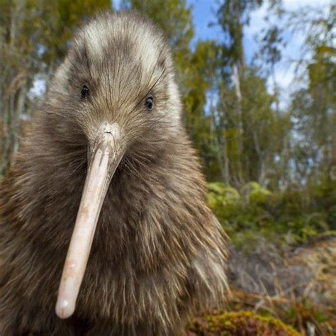

Kiwi birds are unique, flightless birds native to New Zealand, known for their unusual appearance and adaptations to a ground-based lifestyle. They have a shaggy coat of hair-like feathers, and strong legs for digging burrows. Kiwis are primarily found on Stewart Island, in the North and South Islands of New Zealand, and on several offshore islands.
